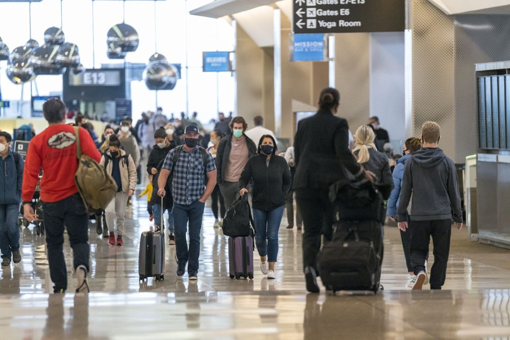

Check Your Nearest Airports First!
While the COVID-19 pandemic looms across holiday plans, the number of cases in the United States (US) continues to rise dramatically.
Individuals are still making plans to be with their family, friends, and loved ones across the country despite restrictions and leaders urging action.
The need to be with people is noticed, but it does not diminish the fact that individuals need to take the correct precautions. Of course, staying at home and using
the latest technology to communicate would be advised. Top health experts still insist on staying home to limit community spread.
However, if you find yourself in dire need to travel this holiday season, here is some advice.
National Geographic Magazine reporter, Nsikan Akpan, includes travel tips if you must travel this holiday season.
"How to limit your COVID-19 risk during holiday travel" details one reporter's steps in preparing for travel.
While wearing a mask, social distancing, maintaining good hygiene, and participating in social events outdoors have been the necessary protocols during 2020.
These precautions are just as necessary to do before and while traveling.
The question on everyone's mind, is quarantine necessary?
Yes, if you plan to travel and be with people outside of your household, it is best to limit "all interactions with people outside your bubble for two weeks."
The quarantine works both ways. You and those in your household should isolate for 14 days, and those you are visiting should do the same.
While testing can be complicated for most, the safest measure is to receive "three negative tests over a two-week period."
If you are concerned about the risk during travel, consider researching the number of cases and the positivity rate of where you live and where you are traveling to.
Should I travel by plane?
Traveling by plane has been proven to be safer than first believed. The air filtration system on the airplanes "filter out 99 percent of [the aerosols]." The risk for travelers is the airport.
Social distancing while at the airport is one of the most important measures you can partake of.
Do your part and make sure your mask fits properly and consider upgrading to a higher quality mask while traveling. Layering masks with a "surgical mask under a tight fabric one" is a great idea to consider for travel as well.

Airports reach records during the COVID-19 pandemic as the number of travelers increased during the Thanksgiving holiday. San Francisco International Airport (pictured) experiences clusters of masked travelers. (Source: Bloomberg L.P. ©, CityLab 2020)
- - -
Do you have travel plans this holiday season? Is there an airport near you? Navigate this map to find an airport in your area.
The article described above explains travel tips, and they can seem daunting to keep up with the numerous health suggestions.
It is still important to check for your flight!
In the map provided is the name and location of US airports.
Is one in your area? Get in touch with the airport to find out about their travel precautions and availability of flights.
The map provided shows the number of enplanements – or airplane landings – at each airport. The number of enplanements establishes the size of the airports.
This map is intended to provide travelers this holiday season a view of the airports near them and if one is in their vicinity.
The data provided is for US airports, and the symbols are ranked based on the size of the enplanements.
Map users should see the legend provided in the top right to view enplanement sizes.
The application has the feature of viewing airport information as each airplane symbol reveals an Airport Name and Location .
To navigate this map, use your mouse to pan and zoom .
Select an airplane symbol to view airport information.
This map is designed to assist with your holiday travel. By providing tips for travel and locations of airports, the purpose is to inform you of the nearest airport for your holiday travel, if you do decide to fly this holiday season.